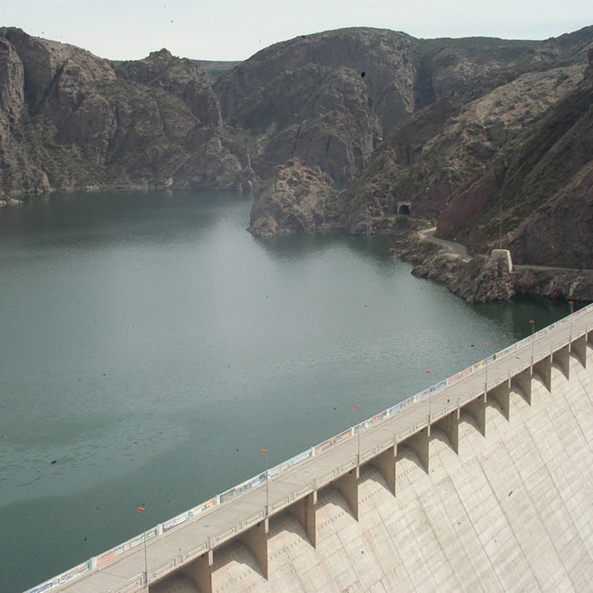

Green Energtica Private Limited
Over the most recent three decades, innovative work in environmentally friendly power vitality have detonated, yielding several promising new advances that can decrease our reliance on coal, oil, and petroleum gas.
Hydropower

Hydroelectric force, hydropower is produced by the Earth's water cycle, including vanishing, precipitation, tides, and the power of water going through a dam. Hydropower relies upon high precipitation levels to create noteworthy measures of vitality.